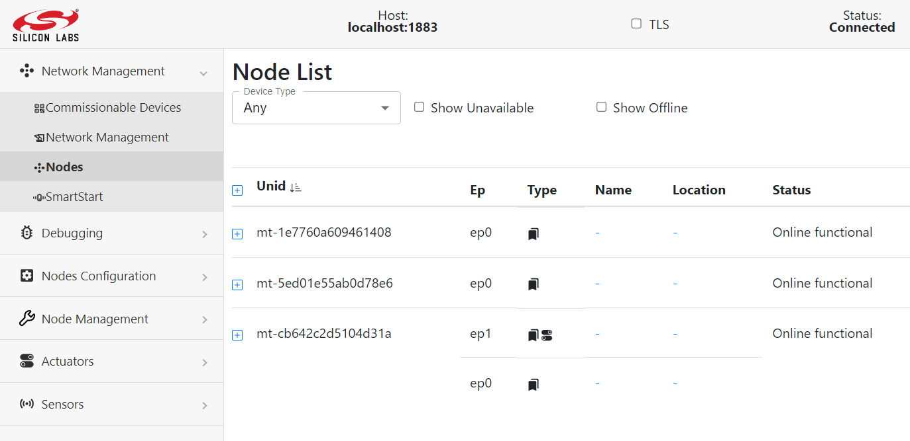
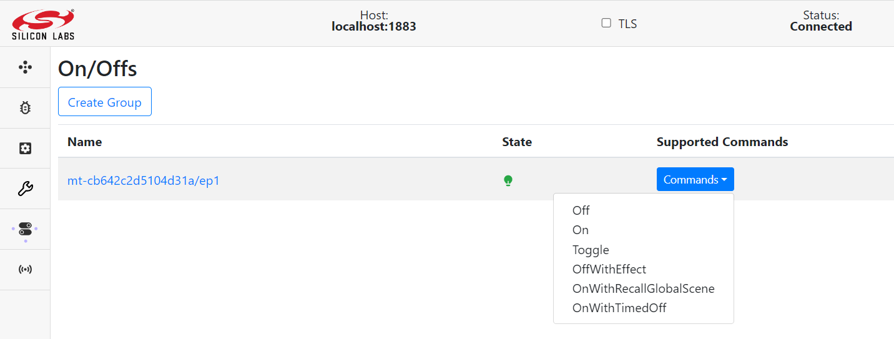

Unify Matter Protocol Controller User Guide
The Unify Matter PC is a Unify Protocol Controller that enables interaction between Unify network and a Matter fabric. For a more thorough description see the Unify Matter PC Overview.
This guide assumes that you have set up Unify SDK. Read the Unify Host SDK’s Getting Started Guide for information on how to set this up.
Once a Unify SDK is setup, the Matter PC can be started.
The following documentation assumes that you have built the Unify Matter PC
application by following the Build Guide and have
transferred the unify-matter-pc to your Raspberry Pi 4 (RPi4) running
the 64-bit version of Raspberry Pi OS bookworm.
Running the Matter PC
At start-up, the Matter PC needs to connect to the Matter Fabric as well as the MQTT Broker. It is therefore critical that you have access to port 1883, the default MQTT Broker’s port, as well as a network setup that allows mDNS through.
A few important runtime configurations must be considered, along with some other configuration options. A full list of command-line parameters is provided in the Command line arguments section.
Important Configuration Settings
Network Interface
Specify the network interface on which the Matter Fabric runs. In a regular RPi4 setup it would be
wlan0for WiFi andeth0for ethernet. Specify this with the ‘--mpc.interface’ argument, as such:uic-mpc --mpc.interface eth0
Key-Value store (KVS)
The Matter PC uses a Key-Value store for persisting various run-time configurations. Make sure to have read/write access to the default path ‘
/var/lib/uic-mpc/chip_unify_mpc.kvs’ or provide the path to where writing this data is allowed. If this file is deleted before start-up, everything is reset and the MPC will not belong to any Matter Fabric until it has again been commissioned.uic-mpc --mpc.kvs ./mpc.kvs
Unify DataStore
The Matter PC uses a sql database for persisting attribute store contents. Make sure to have read/write access to the default path ‘
/var/lib/uic-mpc/mpc.db’ or provide a path to where writing this data is allowed. If this file is deleted before start-up, all the information about previously discovered Matter device during past run will be lost. However, if the KVS is not deleted MPC is still part of a fabric and it will try and rediscover matter devices in the fabric.uic-mpc --mpc.datastore_file ./mpc.db
MQTT Host
If you have followed the Unify Host SDK’s Getting Started Guide, your MQTT Broker should now be running on ‘
localhost’. If you have decided to run the MQTT broker on a different host, you can tell the Unify Matter Protocol Controller to connect to a different host.uic-mpc --mqtt.host 10.0.0.42
Vendor and Product ID
If you have access to the EAP and you want to use the Google Home App, you need to set a specific VID and PID for the Matter PC.
uic-mpc --mpc.vendor fff1 --mpc.product 8001
MPC Specific Configuration
Auto Recovery Delay
The throttling delay(in seconds) to wait for the recovery attempt of next 2 nodes in the auto-recovery process.
uic-mpc --mpc.auto_recovery_delay 2
Auto Recovery Time
The threshold time(in seconds) used in auto-recovery of the failing node. Any node failing for more than time specified by this threshold is not considered for auto-recovery.
uic-mpc --mpc.auto_recovery_time 6000
Starting the Matter PC
Once the configuration parameters are set it is time to start the UMPC application. UMPC can be run in either standalone mode or service mode (if installed from debian package).
Standalone
uic-mpc --mpc.interface eth0 --mpc.kvs ./mpc.kvs --mqtt.host localhost --mqtt.port 1337
Service Mode To run in service mode the configuration parameter are set in
/etc/uic/uic.cfgas needed and then startuic-mpc.service.sudo systemctl start uic-mpc.service
Commissioning the UMPC to a Network
To include the UMPC in the Matter network, it must first be commissioned. The
first time the UMPC starts it will automatically go into commissioning mode.
After 10 minutes the UMPC will exit commissioning mode. If the UMPC has not
been commissioned within this window, the application must be restarted to open
the commissioning window again or the window can be opened by writing
commission in the CLI when running the UMPC in stand-alone mode. The commission
commands can also be used for multi-fabric commissioning.
The Unify Matter PC uses the “On Network” commissioning method. For now, there is no Bluetooth commissioning support.
The commissioning procedure requires use of a pairing code. This pairing code is
written to the console when running the Matter Protocol Controller. Look for something
similar to ‘MT:-24J029Q00KA0648G00’, used as the pairing code in the following
example. This code can be used when commissioning with the CLI commissioning
tool chip-tool.
[1659615301.367669][1967:1967] CHIP:SVR: SetupQRCode: [MT:-24J029Q00KA0648G00]
Another way to get the QR code is to look for an url in the console log similar to and copy the link into a browser. Note that two codes a printed at startup one for Standard Commissioning flow and one for custom commissioning flow. Be sure to use the standard flow with Eco system devices.
[1659615301.367723][1967:1967] CHIP:SVR: https://dhrishi.github.io/connectedhomeip/qrcode.html?data=MT%3A-24J029Q00KA0648G00
It should be noted that the commissioner must be on the same subnet/link-local as the Raspberry Pi. Note that by default the UMPC binds to the eth0 interface. If another interface is to be used, see the description of the command line arguments for setting Network Interface.
Using the chip-tool to Commission
In the following procedure make sure to use the pairing code taken from the
console output, as described above. To commission the Matter PC with the
chip-tool and assign the UMPC with Node ID 1:
chip-tool pairing code 1 MT:-24J0AFN00KA0648G00
Control an OnOff device
To send an OnOff cluster command to a Matter device you must first commission the Matter device to same fabric as UMPC and the device’s ACL must be setup to permit UMPC to control it.
./chip-tool accesscontrol write acl '[{"fabricIndex": 1, "privilege": 5, "authMode": 2, "subjects": [<UMPC Node ID>,112233], "targets": null}]' <Matter Device Node ID> 0
Once commissioned to same Matter fabric, UMPC will discover it from the mDNS advertisement and interviews its capability and publishes them into Unify network after allocating it a unique identifier within Unify network i.e. UNID. Now, log-on to Unify Dev-GUI to view the newly discovered device under Nodes section of the GUI.

If the device supports OnOff cluster then the actuator link for the same should reflect underType column for that device Node. Click on the same to open Actuator page and select the command to be sent to the Matter Device.

For more information on how to use Dev-GUI see the Dev-GUI guide.
For more information on how to use the chip-tool see the
chip-tool manual on the Matter website.
Note: If the Matter device is thread device then Unify OTBR needs to be setup as described in Unify Multiprotocol Setup Guide.
Run the below command to get the operationDataSet to be used in BLE-Thread commissioning:
ot-ctl dataset active -x
Command Line Arguments
The Unify Matter PC provides the following command line arguments:
Using –help displays the following text.
Usage: uic-mpc [Options]
Options:
--conf arg (=/etc/uic/uic.cfg) Config file in YAML format. UIC_CONF
env variable can be set to override the
default config file path
--help Print this help message and quit
--dump-config Dump the current configuration in a
YAML config file format that can be
passed to the --conf option
--version Print version information and quit
The following options can also be in a config file. Options and values passed on the command line take precedence over the options and values in the config file.
--log.level arg (=i) Log Level (d,i,w,e,c)
--log.tag_level arg Tag-based log level
Format: <tag>:<severity>,
<tag>:<severity>, ...
--mpc.datastore_file arg (=/var/lib/uic-mpc/mpc.db)
MPC datastore database file
--mpc.interface arg (=eth0) Ethernet interface to use
--mpc.kvs arg (=/var/lib/uic-mpc/chip_unify_mpc.kvs)
Matter key value store path
--mpc.strict_device_mapping arg (=0) Only map devices we are certain
conforms to specification
--mpc.vendor arg (=65521) 16 bit Vendor ID
--mpc.product arg (=32785) 16 bit Product ID
--mpc.discriminator arg (=4094) 12 bit Discriminator ID
--mpc.pin arg (=9127271) 24 bit pin
--mpc.report_max arg (=3600) ceiled max interval for reportables (in
seconds)
--mpc.auto_recovery_delay arg (=5) The waiting time for auto recovery of
every two nodes (in seconds)
--mpc.auto_recovery_time arg (=86400) The threshold time for each node's auto
recovery (in seconds)
--mqtt.host arg (=localhost) MQTT broker hostname or IP
--mqtt.port arg (=1883) MQTT broker port
--mqtt.cafile arg Path to file containing the PEM-encoded
CA certificate to connect to Mosquitto
MQTT broker for TLS encryption
--mqtt.certfile arg Path to file containing the PEM-encoded
client certificate to connect to
Mosquitto MQTT broker for TLS
encryption
--mqtt.keyfile arg Path to a file containing the
PEM-encoded unencrypted private key for
this client
--mqtt.client_id arg (=unify-matter-pc)
Set the MQTT client ID of the
application.